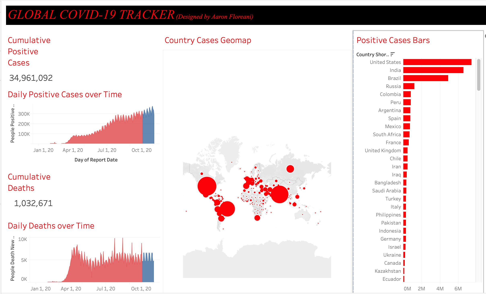
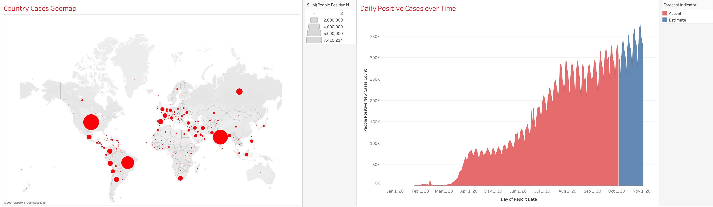
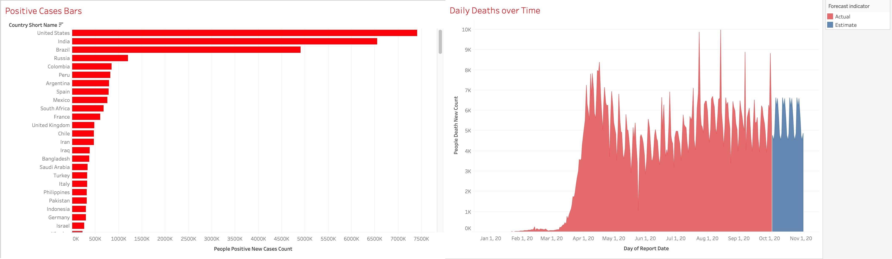

A Tableau Dashboard to Help Guide Public Health Decisions and Policies

Identifying Actionable Strategies Using Data
By studying and analyzing the distribution, patterns, and trends of health and disease data in defined populations - policy makers can make more informed decisions for implementing preventitive measures. For instance, identifying growing country or state trends could inform a public health officials to limit travel from certain areas in order to minimze further outbreaks. My Tableau Dashboard is created using data sourced from the Tableau Coronavirus data hub.

The Importance of Visualization and Dashboards
The human visual system has evolved to be particularly good at recognizing patterns. Data visualization has become a standard analytical tool which capitalizes on the ability of humans to recognize patterns within massive quantities of multi-dimensional data generated by business information systems. A dashboard is a great information management tool that can exhibit KPIs, important trends, and other key data points relevant to business strategies.

